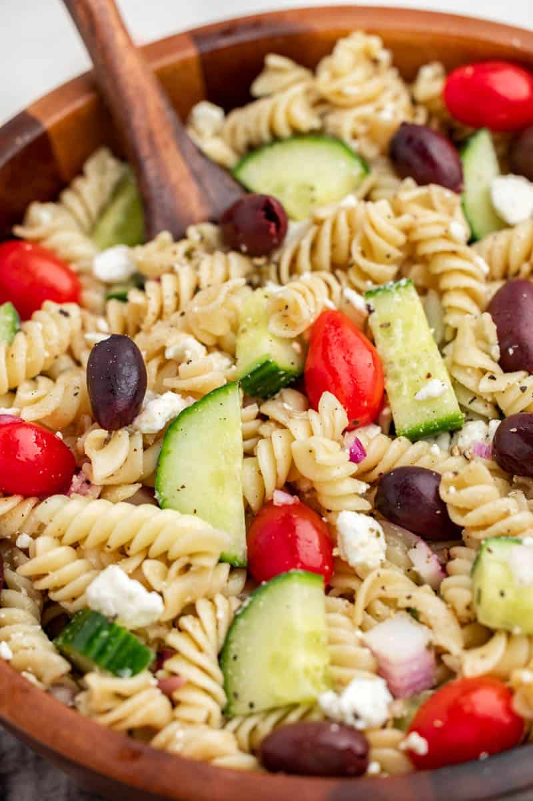

Greek Salad

What is Greek Salad?
Bursting with fresh vegetables like English cucumbers and juicy cherry tomatoes, this dish is a refreshing answer to a warm day. The briny kalamata olives and rich feta cheese contrast beautifully with the crisp veggies and chewy rotini pasta. But it’s the homemade dressing—a harmonious blend of extra virgin olive oil, lemon juice, and red wine vinegar—that ties it all together. This salad is more than a side dish; it’s a culinary journey to the heart of Greece.
Ingredients
- 16- ounce rotini pasta
- 1 diced English cucumber
- 1 pint halved cherry or grape tomatoes
- 1/2 thinly sliced medium red onion
- 1/2 cup whole or halved kalamata olives
- 1 cup diced or crumbled feta cheese
Dressing
- 1/2 cup extra virgin olive oil
- 1/4 cup lemon juice
- 1/4 cup red wine vinegar
- 1 teaspoon dried oregano
- 1 teaspoon salt adjust to taste
- 1 teaspoon black pepper adjust to taste
- 1/2 teaspoon garlic powder
Instructions
- Cook rotini pasta as directed on the package. Once cooked, drain and rinse with cold water to cool the pasta.
- In a large bowl, combine the cooled pasta with diced cucumber, halved tomatoes, thinly sliced red onion, olives, and feta cheese.
- In a separate small bowl, create the dressing by whisking together the olive oil, lemon juice, red wine vinegar, dried oregano, salt, black pepper, and garlic powder.
- Drizzle the dressing over the pasta salad and toss until well combined and dressing is evenly distributed. Serve.
Go Back